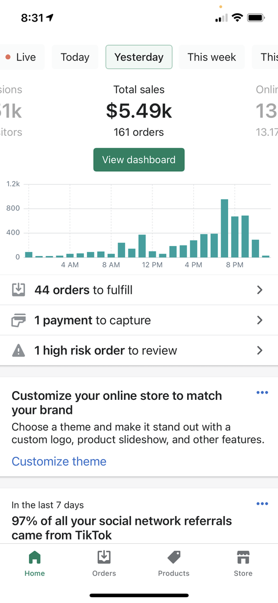
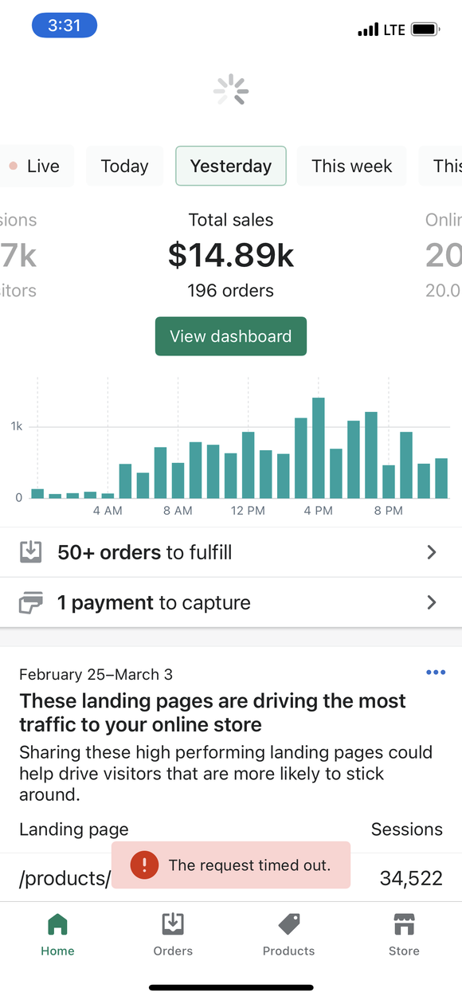

TikTok Ads Phase 1
SOP for Launching TikTok Ads
Overview
OverviewBefore launching TikTok ads, ensure that you have:
- Before launching TikTok ads, ensure that you have
- A clear understanding of your target audience
- Connect Pixel to Shopify
- Connect Pixel to Shopify
Connect Pixel to Shopify
- Create a TikTok Ads account by visiting the TikTok Ads Manager website.
- Choose Conversions + Complete Payment
- Select only TikTok for placements
- Turn off comments and video saves but keep shares
- Keep all targeting broad, don’t touch them
- Demographics wise Start with USA only, 18+, male and female
- Make budget $20
- Schedule for 00:00 next day
- Add at least 5 separate videos to your ad group, I usually use around 10
- Duplicate your ad group 4 times so you have a total of 5 Ad groups at $20 (Total $100 for the day)
-
Next monitor your ads
- once in the morning to see if its running
- second at noon, kill your campaign if you haven’t made at least 1 purchase
- Once at night around 8:00pm-10:00pm to kill un profitable ad groups and duplicate winning ad groups to attack more audiences
Conclusion
By following this SOP, you can successfully launch TikTok ads for your business and reach a wider audience. Remember to keep track of your ad performance and adjust your strategy accordingly.
By following this SOP, you can successfully launch TikTok ads for your business and reach a wider audience. Remember to keep track of your ad performance and adjust your strategy accordingly.
Here are some ads that have made me thousands of dollars a day:

